GB at LAR
WINNERLAR 58.0%
MARGINLAR by 4.7
TOTAL47.2
NFL / NOV 25–30, 2026
Compare the two-action spread and totals picks, pregame win probabilities, expected scoring margins and every official Circa issue.
N202 · All 163 completed games
All 163 completed games are resolved: every one of the 96 saved ordinary policies now scores the same 163 games. The source-clock audit restored 11 games using actual strictly pregame observations, preserving original timestamps. The selected spread policy changed; the selected total policy stayed the same.
The candidate models trained on 2024–2025 and select on all 163 exposed 2026 outcomes. Ordinary picks below were reconstructed at 5:20 p.m. Pacific from saved N202 lines and inputs after this reselection. They are not original N202 issues. Side probabilities condition on a non-push result; saved reference lines are not current executable prices. This correction added zero fits and zero data retrievals.
| Game | Spread side at observed line | Total side at observed line |
|---|---|---|
| GB at LAR | Kickoff passed · no N202 pick | Kickoff passed · no N202 pick |
| CHI at DET | CHI −1.5 · 55.2% | Under 55.5 · 60.8% |
| PHI at DAL | PHI +8.5 · 52.3% | Over 47.5 · 59.0% |
| KC at BUF | BUF −3 · 51.7% | Over 46.5 · 55.9% |
| DEN at PIT | PIT +3.5 · 50.2% | Over 36.5 · 64.1% |
| ATL at MIN | ATL +7 · 55.4% | Under 41.5 · 51.2% |
| BAL at HOU | HOU −6.5 · 54.0% | Under 47.5 · 51.6% |
| NO at CIN | NO +10 · 50.8% | Over 49.5 · 56.2% |
| NYG at IND | NYG −6.5 · 56.5% | Over 41.5 · 55.6% |
| NYJ at MIA | NYJ −3.5 · 54.5% | Over 40.5 · 55.7% |
| TEN at JAX | TEN +14.5 · 50.1% | Over 48.5 · 55.1% |
| NE at LAC | LAC +1.5 · 53.3% | Over 35.5 · 58.1% |
| SEA at SF | SEA +2.5 · 52.1% | Over 44.5 · 58.8% |
| WAS at ARI | WAS −7 · 53.5% | Over 41.5 · 52.0% |
| LV at CLE | CLE −4.5 · 53.6% | Over 39.5 · 56.4% |
| CAR at TB | CAR +3 · 51.2% | Over 43.5 · 54.7% |
| Target | Full-163 exposed selection | Earlier-week selection replay | Population |
|---|---|---|---|
| Ordinary spread | 90W · 70L · 3P · 0 unresolved | 68W · 92L · 3P · 0 unresolved | 163 completed |
| Ordinary total | 87W · 76L · 0P · 0 unresolved | 78W · 85L · 0P · 0 unresolved | 163 completed |
Wins + losses + pushes + unresolved = 163 in every comparison. The selected spread record is 90W–70L–3P and the total record is 87W–76L–0P, with zero unresolved. The earlier-week replay is weaker and remains visible. Inspect all 163 per-game grades and the source-clock audit.
The original V13 and Circa selection protocols remain separate. The complete pre-correction presentation is retained as a dated historical archive.
NFL V13 · updated roster inputs
This issue used 273 player rows from 28 club practice reports. Supplemental notes below retain their original source times.
All 16 games are shown. 15 have a newer pregame roster issue; 1 use a dated earlier issue. These winner, margin and total columns retain the V13 selection protocol.
| Game | Winner | Median margin | Median total | Issue |
|---|---|---|---|---|
| GB at LAR | LAR 67.5% | LAR by 4 | 47 | N201 pregame archive · Nov 25, 4:35 PM PT |
| CHI at DET | CHI 55.0% | CHI by 2 | 60 | N202 roster · Nov 25, 5:04 PM PT |
| PHI at DAL | DAL 79.5% | DAL by 10 | 53 | N202 roster · Nov 25, 5:04 PM PT |
| KC at BUF | BUF 68.8% | BUF by 5 | 53 | N202 roster · Nov 25, 5:04 PM PT |
| DEN at PIT | DEN 60.1% | DEN by 3 | 35 | N202 roster · Nov 25, 5:04 PM PT |
| ATL at MIN | MIN 78.4% | MIN by 8 | 40 | N202 roster · Nov 25, 5:04 PM PT |
| BAL at HOU | HOU 78.4% | HOU by 9 | 51 | N202 roster · Nov 25, 5:04 PM PT |
| NO at CIN | CIN 82.5% | CIN by 14 | 55 | N202 roster · Nov 25, 5:04 PM PT |
| NYG at IND | NYG 75.9% | NYG by 6 | 41 | N202 roster · Nov 25, 5:04 PM PT |
| NYJ at MIA | NYJ 54.2% | NYJ by 2 | 39 | N202 roster · Nov 25, 5:04 PM PT |
| TEN at JAX | JAX 92.1% | JAX by 22 | 54 | N202 roster · Nov 25, 5:04 PM PT |
| NE at LAC | NE 48.8% | Even | 34 | N202 roster · Nov 25, 5:04 PM PT |
| SEA at SF | SF 64.9% | SF by 4 | 50 | N202 roster · Nov 25, 5:04 PM PT |
| WAS at ARI | WAS 79.8% | WAS by 10 | 40 | N202 roster · Nov 25, 5:04 PM PT |
| LV at CLE | CLE 69.5% | CLE by 6 | 38 | N202 roster · Nov 25, 5:04 PM PT |
| CAR at TB | TB 65.2% | TB by 4 | 44 | N202 roster · Nov 25, 5:04 PM PT |
NFL V13 · official worksheet
The standing contest card, validation-selected distribution card and roster-family study retain their own issue times. Expected contest points equal cover probability plus half the push probability. An earlier game can close an entire five-game card.
Official Circa Million VIII rules 7–8 set Saturday 4:00 p.m. Pacific as the weekly deadline. If a five includes an earlier game, all five are due before its earliest selected kickoff. The preserved N195 five includes started GB–LAR and is closed; that kickoff did not close the remaining 15-game alternatives. Official rules. See the corrected deadline for each displayed five. The earlier five that included the Rams remains recorded in the prior issue.
Nov 25, 1:54 PM PT · 5 selections · 32 official side observations in this issue.
| Rank | Selection | Cover | Push | Expected points |
|---|---|---|---|---|
| 1 | NE PK | 57.4% | 3.0% | 0.589 |
| 2 | LV +4.5 | 58.4% | 0.0% | 0.584 |
| 3 | LAR −2.5 | 56.1% | 0.0% | 0.561 |
| 4 | ARI +7 | 54.1% | 3.5% | 0.559 |
| 5 | CIN −10 | 53.2% | 3.1% | 0.548 |
| Official side | Cover | Push | Expected points | Card |
|---|---|---|---|---|
| ATL +7 | 48.9% | 3.4% | 0.506 | |
| MIN −7 | 47.7% | 3.4% | 0.494 | |
| BAL +6.5 | 52.5% | 0.0% | 0.525 | |
| HOU −6.5 | 47.5% | 0.0% | 0.475 | |
| CAR +3 | 48.5% | 5.3% | 0.512 | |
| TB −3 | 46.1% | 5.3% | 0.488 | |
| CHI PK | 45.2% | 3.3% | 0.468 | |
| DET PK | 51.5% | 3.3% | 0.532 | |
| DEN −3.5 | 45.3% | 0.0% | 0.453 | |
| PIT +3.5 | 54.7% | 0.0% | 0.547 | |
| GB +2.5 | 43.9% | 0.0% | 0.439 | |
| LAR −2.5 | 56.1% | 0.0% | 0.561 | Selected |
| KC +2.5 | 46.4% | 0.0% | 0.464 | |
| BUF −2.5 | 53.6% | 0.0% | 0.536 | |
| LV +4.5 | 58.4% | 0.0% | 0.584 | Selected |
| CLE −4.5 | 41.6% | 0.0% | 0.416 | |
| NE PK | 57.4% | 3.0% | 0.589 | Selected |
| LAC PK | 39.6% | 3.0% | 0.411 | |
| NO +10 | 43.6% | 3.1% | 0.452 | |
| CIN −10 | 53.2% | 3.1% | 0.548 | Selected |
| NYG −6.5 | 48.5% | 0.0% | 0.485 | |
| IND +6.5 | 51.5% | 0.0% | 0.515 | |
| NYJ −3.5 | 46.6% | 0.0% | 0.466 | |
| MIA +3.5 | 53.4% | 0.0% | 0.534 | |
| PHI +8.5 | 54.5% | 0.0% | 0.545 | |
| DAL −8.5 | 45.5% | 0.0% | 0.455 | |
| SEA +3 | 45.8% | 4.8% | 0.482 | |
| SF −3 | 49.4% | 4.8% | 0.518 | |
| TEN +14.5 | 46.1% | 0.0% | 0.461 | |
| JAX −14.5 | 53.9% | 0.0% | 0.539 | |
| WAS −7 | 42.3% | 3.5% | 0.441 | |
| ARI +7 | 54.1% | 3.5% | 0.559 | Selected |
Nov 25, 5:04 PM PT · 5 selections · 30 official side observations in this issue.
| Rank | Selection | Cover | Push | Expected points |
|---|---|---|---|---|
| 1 | MIA +3.5 | 63.0% | 0.0% | 0.630 |
| 2 | SF −3 | 58.3% | 3.2% | 0.599 |
| 3 | BUF −2.5 | 59.1% | 0.0% | 0.591 |
| 4 | TB −3 | 56.1% | 3.4% | 0.578 |
| 5 | HOU −6.5 | 57.3% | 0.0% | 0.573 |
| Official side | Cover | Push | Expected points | Card |
|---|---|---|---|---|
| ATL +7 | 46.3% | 1.8% | 0.472 | |
| MIN −7 | 51.9% | 1.8% | 0.528 | |
| BAL +6.5 | 42.7% | 0.0% | 0.427 | |
| HOU −6.5 | 57.3% | 0.0% | 0.573 | Selected |
| CAR +3 | 40.5% | 3.4% | 0.422 | |
| TB −3 | 56.1% | 3.4% | 0.578 | Selected |
| CHI PK | 54.4% | 3.0% | 0.559 | |
| DET PK | 42.6% | 3.0% | 0.441 | |
| DEN −3.5 | 54.8% | 0.0% | 0.548 | |
| PIT +3.5 | 45.2% | 0.0% | 0.452 | |
| KC +2.5 | 40.9% | 0.0% | 0.409 | |
| BUF −2.5 | 59.1% | 0.0% | 0.591 | Selected |
| LV +4.5 | 47.9% | 0.0% | 0.479 | |
| CLE −4.5 | 52.1% | 0.0% | 0.521 | |
| NE PK | 54.1% | 2.7% | 0.554 | |
| LAC PK | 43.3% | 2.7% | 0.446 | |
| NO +10 | 49.7% | 1.5% | 0.504 | |
| CIN −10 | 48.8% | 1.5% | 0.496 | |
| NYG −6.5 | 52.5% | 0.0% | 0.525 | |
| IND +6.5 | 47.5% | 0.0% | 0.475 | |
| NYJ −3.5 | 37.0% | 0.0% | 0.370 | |
| MIA +3.5 | 63.0% | 0.0% | 0.630 | Selected |
| PHI +8.5 | 49.8% | 0.0% | 0.498 | |
| DAL −8.5 | 50.2% | 0.0% | 0.502 | |
| SEA +3 | 38.5% | 3.2% | 0.401 | |
| SF −3 | 58.3% | 3.2% | 0.599 | Selected |
| TEN +14.5 | 56.1% | 0.0% | 0.561 | |
| JAX −14.5 | 43.9% | 0.0% | 0.439 | |
| WAS −7 | 52.5% | 4.1% | 0.545 | |
| ARI +7 | 43.4% | 4.1% | 0.455 |
Nov 25, 5:04 PM PT · 5 selections · 30 official side observations in this issue.
| Rank | Selection | Cover | Push | Expected points |
|---|---|---|---|---|
| 1 | MIA +3.5 | 72.2% | 0.0% | 0.722 |
| 2 | PIT +3.5 | 64.6% | 0.0% | 0.646 |
| 3 | NE PK | 60.5% | 4.4% | 0.627 |
| 4 | PHI +8.5 | 62.3% | 0.0% | 0.623 |
| 5 | BUF −2.5 | 60.0% | 0.0% | 0.600 |
| Official side | Cover | Push | Expected points | Card |
|---|---|---|---|---|
| ATL +7 | 52.6% | 3.3% | 0.543 | |
| MIN −7 | 44.1% | 3.3% | 0.457 | |
| BAL +6.5 | 55.3% | 0.0% | 0.553 | |
| HOU −6.5 | 44.7% | 0.0% | 0.447 | |
| CAR +3 | 46.4% | 4.3% | 0.485 | |
| TB −3 | 49.3% | 4.3% | 0.515 | |
| CHI PK | 41.0% | 2.0% | 0.420 | |
| DET PK | 57.0% | 2.0% | 0.580 | |
| DEN −3.5 | 35.4% | 0.0% | 0.354 | |
| PIT +3.5 | 64.6% | 0.0% | 0.646 | Selected |
| KC +2.5 | 40.0% | 0.0% | 0.400 | |
| BUF −2.5 | 60.0% | 0.0% | 0.600 | Selected |
| LV +4.5 | 54.0% | 0.0% | 0.540 | |
| CLE −4.5 | 46.0% | 0.0% | 0.460 | |
| NE PK | 60.5% | 4.4% | 0.627 | Selected |
| LAC PK | 35.1% | 4.4% | 0.373 | |
| NO +10 | 55.5% | 4.0% | 0.575 | |
| CIN −10 | 40.5% | 4.0% | 0.425 | |
| NYG −6.5 | 40.7% | 0.0% | 0.407 | |
| IND +6.5 | 59.3% | 0.0% | 0.593 | |
| NYJ −3.5 | 27.8% | 0.0% | 0.278 | |
| MIA +3.5 | 72.2% | 0.0% | 0.722 | Selected |
| PHI +8.5 | 62.3% | 0.0% | 0.623 | Selected |
| DAL −8.5 | 37.7% | 0.0% | 0.377 | |
| SEA +3 | 49.0% | 3.9% | 0.510 | |
| SF −3 | 47.1% | 3.9% | 0.490 | |
| TEN +14.5 | 57.2% | 0.0% | 0.572 | |
| JAX −14.5 | 42.8% | 0.0% | 0.428 | |
| WAS −7 | 41.7% | 3.4% | 0.435 | |
| ARI +7 | 54.8% | 3.4% | 0.565 |
Both original Week 12 sides for every game, including earlier kickoff windows, remain available in the prior N201 field notes.
N201 · Availability research
Issued Nov 25, 4:35:43 PM PT. Pregame quarterback and injury evidence updated the forecast inputs. The roster model for each column was selected on prior seasons. The win column uses Brier score, and margin and total use mean absolute error. The comparison below preserves the earlier league forecasts. Coverage is 16 of 16 Week 12 games. The run applied its roster inputs to 8 games with changed fields and recomputed 208 laws. The official Packers–Rams lists entered this edition before issue.
| Game | Winner | Margin | Total |
|---|---|---|---|
| GB at LAR | LAR 67.5% | LAR by 4 | 47 |
| CHI at DET | CHI 55.0% | CHI by 2 | 60 |
| PHI at DAL | DAL 79.5% | DAL by 10 | 53 |
| KC at BUF | BUF 68.8% | BUF by 5 | 53 |
| DEN at PIT | DEN 60.1% | DEN by 3 | 35 |
| ATL at MIN | MIN 78.4% | MIN by 8 | 40 |
| BAL at HOU | HOU 78.4% | HOU by 9 | 51 |
| NO at CIN | CIN 82.5% | CIN by 14 | 55 |
| NYG at IND | NYG 75.9% | NYG by 6 | 41 |
| NYJ at MIA | NYJ 54.2% | NYJ by 2 | 39 |
| TEN at JAX | JAX 92.1% | JAX by 22 | 54 |
| NE at LAC | NE 48.8% | Even | 34 |
| SEA at SF | SF 64.9% | SF by 4 | 50 |
| WAS at ARI | WAS 79.8% | WAS by 10 | 40 |
| LV at CLE | CLE 69.5% | CLE by 6 | 38 |
| CAR at TB | TB 65.2% | TB by 4 | 44 |
The research card ranks distinct games by cover probability plus half the push probability. The full official panel retains the contest policy selected across model families. The return records zero entries.
| Rank | Official side | Cover | Push | Exp. pts |
|---|---|---|---|---|
| 1 | MIA +3.5 | 72.2% | 0.0% | 0.722 |
| 2 | PIT +3.5 | 64.6% | 0.0% | 0.646 |
| 3 | NE PK | 60.5% | 4.4% | 0.627 |
| 4 | PHI +8.5 | 62.3% | 0.0% | 0.623 |
| 5 | LAR -2.5 | 61.3% | 0.0% | 0.613 |
| Official side | Cover | Push | Exp. pts |
|---|---|---|---|
| GB +2.5 | 38.7% | 0.0% | 0.387 |
| LAR -2.5 | 61.3% | 0.0% | 0.613 |
| CHI PK | 41.0% | 2.0% | 0.420 |
| DET PK | 57.0% | 2.0% | 0.580 |
| PHI +8.5 | 62.3% | 0.0% | 0.623 |
| DAL -8.5 | 37.7% | 0.0% | 0.377 |
| KC +2.5 | 40.0% | 0.0% | 0.400 |
| BUF -2.5 | 60.0% | 0.0% | 0.600 |
| DEN -3.5 | 35.4% | 0.0% | 0.354 |
| PIT +3.5 | 64.6% | 0.0% | 0.646 |
| ATL +7 | 52.6% | 3.3% | 0.543 |
| MIN -7 | 44.1% | 3.3% | 0.457 |
| BAL +6.5 | 55.3% | 0.0% | 0.553 |
| HOU -6.5 | 44.7% | 0.0% | 0.447 |
| NO +10 | 55.5% | 4.0% | 0.575 |
| CIN -10 | 40.5% | 4.0% | 0.425 |
| NYG -6.5 | 40.7% | 0.0% | 0.407 |
| IND +6.5 | 59.3% | 0.0% | 0.593 |
| NYJ -3.5 | 27.8% | 0.0% | 0.278 |
| MIA +3.5 | 72.2% | 0.0% | 0.722 |
| TEN +14.5 | 57.2% | 0.0% | 0.572 |
| JAX -14.5 | 42.8% | 0.0% | 0.428 |
| NE PK | 60.5% | 4.4% | 0.627 |
| LAC PK | 35.1% | 4.4% | 0.373 |
| SEA +3 | 49.0% | 3.9% | 0.510 |
| SF -3 | 47.1% | 3.9% | 0.490 |
| WAS -7 | 41.7% | 3.4% | 0.435 |
| ARI +7 | 54.8% | 3.4% | 0.565 |
| LV +4.5 | 54.0% | 0.0% | 0.540 |
| CLE -4.5 | 46.0% | 0.0% | 0.460 |
| CAR +3 | 46.4% | 4.3% | 0.485 |
| TB -3 | 49.3% | 4.3% | 0.515 |
Open the self-contained N201 weekly board · Public weekly JSON
Game outlooks
Winner uses the Brier-selected probability model. Margin and total use their mean-absolute-error selections. The 4:36 p.m. Pacific N201 refresh retained all 16 standing league forecasts. The separately issued roster forecasts incorporate the game-day information. All kickoff times are Pacific.
Personnel update. Pittsburgh named Mason Rudolph the starter after the football feature cutoff. This projection predates the announcement.
Availability reportStarter report. Indianapolis named Anthony Richardson Sr. the starter.
Availability reportStarter report. New England expects DeVito to start. Herbert’s clearance remains unconfirmed.
Availability reportStarter report. Arizona called Beck day-to-day. Johnson is the alternative if Beck cannot play.
Availability reportWinner and total were issued Nov 24 at 10:08 p.m. Pacific. The margin issue was Nov 25 at 12:40 p.m. The last confirmed football feature cutoff was Nov 24 at 6:39 p.m. Pittsburgh named Mason Rudolph its starter after that cutoff. Treat the PIT–DEN football projections as pre-announcement estimates.
Pittsburgh starter announcementEarlier N198 sensitivity · November 25, 3:52 p.m. Pacific
The 3:51 p.m. official lists were applied to the frozen N198 roster models. The calculation kept the other game inputs fixed. Win probability, margin and total each use the model selected for that objective. The table below compares the original 3:32 p.m. forecasts with this later sensitivity check.
| Model output | Issued 3:32 p.m. | Game-day sensitivity |
|---|---|---|
| Rams win probability | 64.46% | 68.68% |
| Median margin | Rams by 4 | Rams by 6 |
| Median total | 44 | 45 |
November 25 · Week 12
N201 assessed 32 team slots for the later forecast. Its provider roster covered all 32. The NFL practice report supplied 26 teams, and 30 club practice pages supplied 301 player rows. Three quarterbacks were officially announced, against 28 projected or announced. The source-specific notes below retain their own reporting clocks.
The NFL’s 3:12 p.m. Pacific report listed 256 players across 26 of 32 teams. Eight clubs had a final game designation report. Open a matchup for published game designations, practice participation and reported starter changes. A player who misses practice can still play. Green Bay’s official active and inactive designations were verified at 3:45 p.m. Pacific. Los Angeles’s six inactive designations were verified from the updated official sheet at 3:51 p.m. Pacific. Ty Simpson is the designated emergency third quarterback. The teams’ earlier injury reports and injured-reserve lists remain dated separately. Club practice tables were checked at 3:37 p.m. and increased player-level coverage to 28 of 32 teams. These announcements followed the N198 forecast and preceded the new N201 roster edition. Seattle, San Francisco, Cincinnati and Denver include additional Wednesday club reports. The standing league forecasts use football inputs through Nov 24 at 6:39 p.m. Pacific. The N201 roster-family estimates use their own Nov 25 clock.
Questionable Zaire Franklin (LB), Travis Glover (G), Josh Jacobs (RB), Bo Melton (WR), Skyy Moore (WR), Micah Parsons (LB), Sean Rhyan (C), Kevin Zeitler (G).
Practice or estimated participation from the league table: 3 full, 8 limited.
Final report · 2026-11-24 Josh Jacobs and Micah Parsons were among eight questionable on the final report. packers.com.
Official game-day sheet · 3:45 p.m. Pacific Inactive: Josh Jacobs, Zaire Franklin, Jager Burton, Donovan Jennings, Mekhi Becton Sr.. Confirmed active: Micah Parsons, Sean Rhyan, Kevin Zeitler. packers.com.
Out Steve Avila (G), Terrance Ferguson (TE), Coleman Shelton (C).
Practice or estimated participation from the league table: 12 full, 3 did not participate, 2 limited.
Final report · 2026-11-24 Steve Avila, Coleman Shelton and Terrance Ferguson were ruled out. therams.com.
Injured reserve Rams receiver Puka Nacua is on injured reserve and will miss the Packers game. The reserve list is separate from the weekly game-day inactive list. therams.com.
Official game-day sheet · 3:51 p.m. Pacific Inactive: Ty Simpson (emergency third quarterback), Larrell Murchison (DE), Darryl Peterson III (OLB), Coleman Shelton (C), Steve Avila (G) and Desjuan Johnson (OLB). Simpson’s emergency designation allows conditional participation. packers.com.
Out Kyler Gordon (CB), Elijah Hicks (S), Roschon Johnson (RB).
Questionable D'Marco Jackson (LB), Tyrique Stevenson (CB).
Practice or estimated participation from the league table: 2 full, 3 did not participate, 1 limited.
Final report · 2026-11-25 Kyler Gordon, Elijah Hicks and Roschon Johnson were ruled out. chicagobears.com.
Out Skyler Gill-Howard (DT), Ennis Rakestraw Jr. (CB).
Questionable Chuck Clark (S), DJ Wonnum (DE).
Practice or estimated participation from the league table: 2 limited, 3 full, 2 did not participate.
Final report · 2026-11-25 Skyler Gill-Howard and Ennis Rakestraw Jr. were ruled out. Chuck Clark and DJ Wonnum were questionable. detroitlions.com.
Out Arnold Ebiketie (LB), Jonathan Jones (CB).
Practice or estimated participation from the league table: 10 full, 2 did not participate, 2 limited.
Final report · 2026-11-25 Joe Milton is the starting QB. Arnold Ebiketie and Jonathan Jones were ruled out. Quinyon Mitchell practiced fully. philadelphiaeagles.com.
Out Tyler Booker (G), Jake Ferguson (TE), P.J. Locke (S), Jonathan Mingo (WR).
Questionable Devin Moore (CB), Jalen Thompson (S).
Practice or estimated participation from the league table: 9 full, 3 did not participate, 1 limited.
Final report · 2026-11-25 Dak Prescott practiced fully. Tyler Booker, Jake Ferguson, P.J. Locke and Jonathan Mingo were ruled out. dallascowboys.com.
Out Jaylon Moore (T), Omarr Norman-Lott (DT), Kenneth Walker III (RB).
Questionable Noah Gray (TE), Peter Woods (DT).
Practice or estimated participation from the league table: 6 full, 3 did not participate, 1 limited.
Final report · 2026-11-25 Patrick Mahomes practiced fully. Kenneth Walker III, Jaylon Moore and Omarr Norman-Lott were ruled out. chiefs.com.
Questionable Christian Benford (CB), Dalton Kincaid (TE), T.J. Sanders (DE), O'Cyrus Torrence (G), Dorian Williams (LB).
Practice or estimated participation from the league table: 5 limited, 9 full.
Final report · 2026-11-25 Starting CB Christian Benford and TE Dalton Kincaid were among five questionable. buffalobills.com.
Out Sai'vion Jones (DE), Taylor Rapp (S).
Practice or estimated participation from the league table: 5 full, 2 did not participate, 1 limited.
Practice report · 2026-11-25 J.K. Dobbins missed practice. Brandon Jones participated fully. steelers.com.
Club update · November 25 Denver confirmed the two Friday absences ahead of its full game-status report, which is due Thursday. denverbroncos.com.
The league table lists no game-day designations for this team at the capture time.
Practice or estimated participation from the league table: 2 full, 3 limited, 4 did not participate.
Practice report · 2026-11-25 The Steelers named Mason Rudolph the starter against Denver on Tuesday night and released Aaron Rodgers on Wednesday. Alex Highsmith missed practice. steelers.com · steelers.com.
The league table lists no game-day designations for this team at the capture time.
Practice or estimated participation from the league table: 5 limited, 1 full, 1 did not participate.
Practice report · 2026-11-25 Juwan Johnson missed practice. Taliese Fuaga and Erik McCoy were limited. neworleanssaints.com.
No player table appeared in the NFL league snapshot for this team. Game status remains unconfirmed here.
Wednesday walkthrough · November 25 Zac Taylor described guard Dalton Risner and safety Bryan Cook as day-to-day after a Wednesday walkthrough. The league table had no Cincinnati player rows at the cutoff. bengals.com.
Wednesday team practice report Dalton Risner missed Wednesday’s walkthrough, while Bryan Cook was listed as a full participant. Zac Taylor had described both players as day-to-day. bengals.com.
The league table lists no game-day designations for this team at the capture time.
Practice or estimated participation from the league table: 6 limited, 3 did not participate.
Practice report · 2026-11-25 Derrick Henry reentered the concussion protocol and practiced on a limited basis. Zay Flowers was limited. baltimoreravens.com.
The league table lists no game-day designations for this team at the capture time.
Practice or estimated participation from the league table: 6 full, 5 did not participate, 3 limited.
Practice report · 2026-11-25 Woody Marks practiced fully. Marvin Harrison Jr. was limited. Danielle Hunter and Kayshon Boutte missed practice. houstontexans.com.
The league table lists no game-day designations for this team at the capture time.
Practice or estimated participation from the league table: 3 did not participate, 1 full, 2 limited.
Practice report · 2026-11-25 Abdul Carter missed practice. Isaiah Likely was limited. giants.com.
The league table lists no game-day designations for this team at the capture time.
Practice or estimated participation from the league table: 7 did not participate, 3 full.
Practice report · 2026-11-25 Shane Steichen named Anthony Richardson Sr. the starter on Nov. 20. Will Mallory, Andrew Ogletree and Jalen Travis missed Wednesday practice. colts.com.
The league table lists no game-day designations for this team at the capture time.
Practice or estimated participation from the league table: 2 did not participate, 2 full, 3 limited.
Practice report · 2026-11-25 Omar Cooper Jr. and Harrison Phillips did not participate. newyorkjets.com.
The league table lists no game-day designations for this team at the capture time.
Practice or estimated participation from the league table: 3 full, 3 did not participate, 5 limited.
Practice report · 2026-11-25 Julius Brents and Jared Wayne did not participate. Austin Jackson was limited. newyorkjets.com.
The league table lists no game-day designations for this team at the capture time.
Practice or estimated participation from the league table: 6 did not participate, 1 limited.
Practice report · 2026-11-25 Matthew Bergeron, Zachariah Branch and Jahan Dotson missed practice. atlantafalcons.com.
The league table lists no game-day designations for this team at the capture time.
Practice or estimated participation from the league table: 5 did not participate, 3 limited.
Practice report · 2026-11-25 QB Kyler Murray was limited. Jordan Addison and Christian Darrisaw missed practice. vikings.com.
The league table lists no game-day designations for this team at the capture time.
Practice or estimated participation from the league table: 5 full, 3 did not participate, 1 limited.
Practice report · 2026-11-25 Dan Moore Jr., Cordale Flott and Terrell Burgess did not participate. tennesseetitans.com.
The league table lists no game-day designations for this team at the capture time.
Practice or estimated participation from the league table: 9 limited, 3 full, 1 did not participate.
Practice report · 2026-11-25 Bhayshul Tuten missed practice. Jakobi Meyers and Walker Little were limited. tennesseetitans.com.
The league table lists no game-day designations for this team at the capture time.
Practice or estimated participation from the league table: 1 full, 4 did not participate, 3 limited.
Practice report · 2026-11-25 The club expects Tommy DeVito to start after Drake Maye fractured his fibula. Maye and A.J. Brown missed Wednesday practice. patriots.com.
No player table appeared in the NFL league snapshot for this team. Game status remains unconfirmed here.
Quarterback update · 2026-11-24 On Monday, Jim Harbaugh confirmed Justin Herbert entered concussion protocol. The Tuesday unofficial depth chart listed him first. No game clearance was verified in this snapshot. chargers.com · chargers.com.
The league table lists no game-day designations for this team at the capture time.
Practice or estimated participation from the league table: 7 full, 2 limited, 2 did not participate.
Practice report · 2026-11-25 Jayden Daniels practiced fully. Stefon Diggs and Amik Robertson missed practice. commanders.com.
The league table lists no game-day designations for this team at the capture time.
Practice or estimated participation from the league table: 6 did not participate, 1 full, 2 limited.
Practice report · 2026-11-25 Carson Beck missed practice with a back injury. The club described him as day-to-day and identified Josh Johnson as the alternative if Beck cannot play. azcardinals.com.
No player table appeared in the NFL league snapshot for this team. Game status remains unconfirmed here.
Quarterback update · November 25 Mike Macdonald said Sam Darnold would start if practice went well. He also ruled out right tackle Abraham Lucas and said guard Quenton Nelson would miss another week. seahawks.com.
Wednesday team practice report Sam Darnold practiced fully Wednesday. Mike Macdonald had said he would start if practice went well. Drew Lock was limited, and Jalen Milroe did not participate. seahawks.com.
No player table appeared in the NFL league snapshot for this team. Game status remains unconfirmed here.
Quarterback update · November 25 Kyle Shanahan said Brock Purdy would miss Wednesday practice with an ankle sprain. Purdy is day-to-day. Mac Jones would start if Purdy cannot play. nfl.com.
The league table lists no game-day designations for this team at the capture time.
Practice or estimated participation from the league table: 2 limited, 2 did not participate, 4 full.
Practice report · 2026-11-25 Brock Bowers was limited and Adam Butler missed practice. raiders.com.
The league table lists no game-day designations for this team at the capture time.
Practice or estimated participation from the league table: 4 did not participate, 5 limited, 1 full.
Practice report · 2026-11-25 Harold Fannin Jr. was limited and Denzel Boston missed practice. raiders.com.
No player table appeared in the NFL league snapshot for this team. Game status remains unconfirmed here.
Report availability · 2026-11-25 The Panthers play Monday. The league snapshot had no Carolina injury table for this matchup Wednesday. buccaneers.com.
No player table appeared in the NFL league snapshot for this team. Game status remains unconfirmed here.
Report availability · 2026-11-25 The Buccaneers play Monday. The league snapshot had no Tampa Bay injury table for this matchup Wednesday. buccaneers.com.
Official Week 12 lines
The standing five come from the N195 weekly-points model. Expected contest points equal cover probability plus half the push probability. These are research selections. This workflow recorded no contest submission; account activity was not queried.
Choose a policy to see both sides of all 16 official games. Five stars mark its selected card. The N201 distribution weekly-five choices are MIA +3.5, LAR −2.5, SF −3, BUF −2.5, TB −3. The N195 standing weekly-five policy leads on matched validation weeks. The new roster-family card is shown beside its current forecasts.
| Official side | Cover | Push | Loss | Exp. pts |
|---|---|---|---|---|
| GB +2.5 | 43.9% | 0.0% | 56.1% | 0.439 |
| LAR −2.5 ★ | 56.1% | 0.0% | 43.9% | 0.561 |
| CHI PK | 45.2% | 3.3% | 51.5% | 0.468 |
| DET PK | 51.5% | 3.3% | 45.2% | 0.532 |
| PHI +8.5 | 54.5% | 0.0% | 45.5% | 0.545 |
| DAL −8.5 | 45.5% | 0.0% | 54.5% | 0.455 |
| KC +2.5 | 46.4% | 0.0% | 53.6% | 0.464 |
| BUF −2.5 | 53.6% | 0.0% | 46.4% | 0.536 |
| DEN −3.5 | 45.3% | 0.0% | 54.7% | 0.453 |
| PIT +3.5 | 54.7% | 0.0% | 45.3% | 0.547 |
| ATL +7 | 48.9% | 3.4% | 47.7% | 0.506 |
| MIN −7 | 47.7% | 3.4% | 48.9% | 0.494 |
| BAL +6.5 | 52.5% | 0.0% | 47.5% | 0.525 |
| HOU −6.5 | 47.5% | 0.0% | 52.5% | 0.475 |
| NO +10 | 43.6% | 3.1% | 53.2% | 0.452 |
| CIN −10 ★ | 53.2% | 3.1% | 43.6% | 0.548 |
| NYG −6.5 | 48.5% | 0.0% | 51.5% | 0.485 |
| IND +6.5 | 51.5% | 0.0% | 48.5% | 0.515 |
| NYJ −3.5 | 46.6% | 0.0% | 53.4% | 0.466 |
| MIA +3.5 | 53.4% | 0.0% | 46.6% | 0.534 |
| TEN +14.5 | 46.1% | 0.0% | 53.9% | 0.461 |
| JAX −14.5 | 53.9% | 0.0% | 46.1% | 0.539 |
| NE PK ★ | 57.4% | 3.0% | 39.6% | 0.589 |
| LAC PK | 39.6% | 3.0% | 57.4% | 0.411 |
| SEA +3 | 45.8% | 4.8% | 49.4% | 0.482 |
| SF −3 | 49.4% | 4.8% | 45.8% | 0.518 |
| WAS −7 | 42.3% | 3.5% | 54.1% | 0.441 |
| ARI +7 ★ | 54.1% | 3.5% | 42.3% | 0.559 |
| LV +4.5 ★ | 58.4% | 0.0% | 41.6% | 0.584 |
| CLE −4.5 | 41.6% | 0.0% | 58.4% | 0.416 |
| CAR +3 | 48.5% | 5.3% | 46.1% | 0.512 |
| TB −3 | 46.1% | 5.3% | 48.5% | 0.488 |
| Official side | Cover | Push | Loss | Exp. pts |
|---|---|---|---|---|
| GB +2.5 | 49.0% | 0.0% | 51.0% | 0.490 |
| LAR −2.5 | 51.0% | 0.0% | 49.0% | 0.510 |
| CHI PK ★ | 55.1% | 3.6% | 41.3% | 0.569 |
| DET PK | 41.3% | 3.6% | 55.1% | 0.431 |
| PHI +8.5 ★ | 55.6% | 0.0% | 44.4% | 0.556 |
| DAL −8.5 | 44.4% | 0.0% | 55.6% | 0.444 |
| KC +2.5 | 50.5% | 0.0% | 49.5% | 0.505 |
| BUF −2.5 | 49.5% | 0.0% | 50.5% | 0.495 |
| DEN −3.5 | 44.1% | 0.0% | 55.9% | 0.441 |
| PIT +3.5 ★ | 55.9% | 0.0% | 44.1% | 0.559 |
| ATL +7 | 46.4% | 3.5% | 50.2% | 0.481 |
| MIN −7 | 50.2% | 3.5% | 46.4% | 0.519 |
| BAL +6.5 | 48.8% | 0.0% | 51.2% | 0.488 |
| HOU −6.5 | 51.2% | 0.0% | 48.8% | 0.512 |
| NO +10 | 45.4% | 3.1% | 51.5% | 0.469 |
| CIN −10 | 51.5% | 3.1% | 45.4% | 0.531 |
| NYG −6.5 | 51.2% | 0.0% | 48.8% | 0.512 |
| IND +6.5 | 48.8% | 0.0% | 51.2% | 0.488 |
| NYJ −3.5 | 49.8% | 0.0% | 50.2% | 0.498 |
| MIA +3.5 | 50.2% | 0.0% | 49.8% | 0.502 |
| TEN +14.5 | 46.2% | 0.0% | 53.8% | 0.462 |
| JAX −14.5 | 53.8% | 0.0% | 46.2% | 0.538 |
| NE PK ★ | 53.6% | 3.4% | 43.0% | 0.553 |
| LAC PK | 43.0% | 3.4% | 53.6% | 0.447 |
| SEA +3 | 44.6% | 6.0% | 49.4% | 0.476 |
| SF −3 | 49.4% | 6.0% | 44.6% | 0.524 |
| WAS −7 | 42.5% | 3.5% | 54.0% | 0.442 |
| ARI +7 ★ | 54.0% | 3.5% | 42.5% | 0.558 |
| LV +4.5 | 51.6% | 0.0% | 48.4% | 0.516 |
| CLE −4.5 | 48.4% | 0.0% | 51.6% | 0.484 |
| CAR +3 | 49.1% | 6.0% | 44.8% | 0.521 |
| TB −3 | 44.8% | 6.0% | 49.1% | 0.479 |
| Official side | Cover | Push | Loss | Exp. pts |
|---|---|---|---|---|
| GB +2.5 | 54.2% | 0.0% | 45.8% | 0.542 |
| LAR −2.5 | 45.8% | 0.0% | 54.2% | 0.458 |
| CHI PK | 45.4% | 3.8% | 50.8% | 0.473 |
| DET PK | 50.8% | 3.8% | 45.4% | 0.527 |
| PHI +8.5 | 52.9% | 0.0% | 47.1% | 0.529 |
| DAL −8.5 | 47.1% | 0.0% | 52.9% | 0.471 |
| KC +2.5 ★ | 59.4% | 0.0% | 40.6% | 0.594 |
| BUF −2.5 | 40.6% | 0.0% | 59.4% | 0.406 |
| DEN −3.5 | 52.0% | 0.0% | 48.0% | 0.520 |
| PIT +3.5 | 48.0% | 0.0% | 52.0% | 0.480 |
| ATL +7 | 44.0% | 3.6% | 52.3% | 0.459 |
| MIN −7 | 52.3% | 3.6% | 44.0% | 0.541 |
| BAL +6.5 | 56.4% | 0.0% | 43.6% | 0.564 |
| HOU −6.5 | 43.6% | 0.0% | 56.4% | 0.436 |
| NO +10 | 41.6% | 3.4% | 55.0% | 0.433 |
| CIN −10 | 55.0% | 3.4% | 41.6% | 0.567 |
| NYG −6.5 | 42.8% | 0.0% | 57.2% | 0.428 |
| IND +6.5 ★ | 57.2% | 0.0% | 42.8% | 0.572 |
| NYJ −3.5 | 47.2% | 0.0% | 52.8% | 0.472 |
| MIA +3.5 | 52.8% | 0.0% | 47.2% | 0.528 |
| TEN +14.5 | 42.3% | 0.0% | 57.7% | 0.423 |
| JAX −14.5 ★ | 57.7% | 0.0% | 42.3% | 0.577 |
| NE PK ★ | 58.5% | 3.8% | 37.8% | 0.603 |
| LAC PK | 37.8% | 3.8% | 58.5% | 0.397 |
| SEA +3 | 53.2% | 7.0% | 39.8% | 0.567 |
| SF −3 | 39.8% | 7.0% | 53.2% | 0.433 |
| WAS −7 | 39.7% | 3.6% | 56.6% | 0.415 |
| ARI +7 ★ | 56.6% | 3.6% | 39.7% | 0.585 |
| LV +4.5 | 48.2% | 0.0% | 51.8% | 0.482 |
| CLE −4.5 | 51.8% | 0.0% | 48.2% | 0.518 |
| CAR +3 | 49.3% | 7.0% | 43.6% | 0.528 |
| TB −3 | 43.6% | 7.0% | 49.3% | 0.472 |
| Official side | Cover | Push | Loss | Exp. pts |
|---|---|---|---|---|
| GB +2.5 | 45.7% | 0.0% | 54.3% | 0.457 |
| LAR −2.5 | 54.3% | 0.0% | 45.7% | 0.543 |
| CHI PK | 51.5% | 3.1% | 45.4% | 0.531 |
| DET PK | 45.4% | 3.1% | 51.5% | 0.469 |
| PHI +8.5 | 42.8% | 0.0% | 57.2% | 0.428 |
| DAL −8.5 ★ | 57.2% | 0.0% | 42.8% | 0.572 |
| KC +2.5 | 39.1% | 0.0% | 60.9% | 0.391 |
| BUF −2.5 ★ | 60.9% | 0.0% | 39.1% | 0.609 |
| DEN −3.5 | 45.9% | 0.0% | 54.1% | 0.459 |
| PIT +3.5 | 54.1% | 0.0% | 45.9% | 0.541 |
| ATL +7 | 44.3% | 3.2% | 52.5% | 0.459 |
| MIN −7 | 52.5% | 3.2% | 44.3% | 0.541 |
| BAL +6.5 | 48.9% | 0.0% | 51.1% | 0.489 |
| HOU −6.5 | 51.1% | 0.0% | 48.9% | 0.511 |
| NO +10 | 38.5% | 3.2% | 58.3% | 0.401 |
| CIN −10 ★ | 58.3% | 3.2% | 38.5% | 0.599 |
| NYG −6.5 | 44.9% | 0.0% | 55.1% | 0.449 |
| IND +6.5 | 55.1% | 0.0% | 44.9% | 0.551 |
| NYJ −3.5 | 46.4% | 0.0% | 53.6% | 0.464 |
| MIA +3.5 | 53.6% | 0.0% | 46.4% | 0.536 |
| TEN +14.5 | 42.6% | 0.0% | 57.4% | 0.426 |
| JAX −14.5 ★ | 57.4% | 0.0% | 42.6% | 0.574 |
| NE PK | 49.9% | 3.1% | 47.0% | 0.515 |
| LAC PK | 47.0% | 3.1% | 49.9% | 0.485 |
| SEA +3 | 48.1% | 3.1% | 48.8% | 0.497 |
| SF −3 | 48.8% | 3.1% | 48.1% | 0.503 |
| WAS −7 | 47.5% | 3.0% | 49.5% | 0.490 |
| ARI +7 | 49.5% | 3.0% | 47.5% | 0.510 |
| LV +4.5 | 50.1% | 0.0% | 49.9% | 0.501 |
| CLE −4.5 | 49.9% | 0.0% | 50.1% | 0.499 |
| CAR +3 | 40.9% | 3.1% | 56.0% | 0.425 |
| TB −3 ★ | 56.0% | 3.1% | 40.9% | 0.575 |
| Official side | Cover | Push | Loss | Exp. pts |
|---|---|---|---|---|
| GB +2.5 | 30.9% | 0.0% | 69.1% | 0.309 |
| LAR −2.5 ★ | 69.1% | 0.0% | 30.9% | 0.691 |
| CHI PK | 32.3% | 2.8% | 64.9% | 0.337 |
| DET PK ★ | 64.9% | 2.8% | 32.3% | 0.663 |
| PHI +8.5 | 50.0% | 0.0% | 50.0% | 0.500 |
| DAL −8.5 | 50.0% | 0.0% | 50.0% | 0.500 |
| KC +2.5 | 38.6% | 0.0% | 61.4% | 0.386 |
| BUF −2.5 | 61.4% | 0.0% | 38.6% | 0.614 |
| DEN −3.5 | 36.7% | 0.0% | 63.3% | 0.367 |
| PIT +3.5 | 63.3% | 0.0% | 36.7% | 0.633 |
| ATL +7 | 48.0% | 3.2% | 48.8% | 0.496 |
| MIN −7 | 48.8% | 3.2% | 48.0% | 0.504 |
| BAL +6.5 | 30.5% | 0.0% | 69.5% | 0.305 |
| HOU −6.5 ★ | 69.5% | 0.0% | 30.5% | 0.695 |
| NO +10 | 46.9% | 3.2% | 49.9% | 0.485 |
| CIN −10 | 49.9% | 3.2% | 46.9% | 0.515 |
| NYG −6.5 | 36.0% | 0.0% | 64.0% | 0.360 |
| IND +6.5 ★ | 64.0% | 0.0% | 36.0% | 0.640 |
| NYJ −3.5 | 30.5% | 0.0% | 69.5% | 0.305 |
| MIA +3.5 ★ | 69.5% | 0.0% | 30.5% | 0.695 |
| TEN +14.5 | 51.8% | 0.0% | 48.2% | 0.518 |
| JAX −14.5 | 48.2% | 0.0% | 51.8% | 0.482 |
| NE PK | 59.0% | 2.9% | 38.2% | 0.604 |
| LAC PK | 38.2% | 2.9% | 59.0% | 0.396 |
| SEA +3 | 49.7% | 3.0% | 47.3% | 0.512 |
| SF −3 | 47.3% | 3.0% | 49.7% | 0.488 |
| WAS −7 | 41.3% | 2.9% | 55.8% | 0.428 |
| ARI +7 | 55.8% | 2.9% | 41.3% | 0.572 |
| LV +4.5 | 46.5% | 0.0% | 53.5% | 0.465 |
| CLE −4.5 | 53.5% | 0.0% | 46.5% | 0.535 |
| CAR +3 | 43.7% | 3.0% | 53.3% | 0.452 |
| TB −3 | 53.3% | 3.0% | 43.7% | 0.548 |
| Official side | Cover | Push | Loss | Exp. pts |
|---|---|---|---|---|
| GB +2.5 | 44.6% | 0.0% | 55.4% | 0.446 |
| LAR −2.5 | 55.4% | 0.0% | 44.6% | 0.554 |
| CHI PK | 48.0% | 3.1% | 48.8% | 0.496 |
| DET PK | 48.8% | 3.1% | 48.0% | 0.504 |
| PHI +8.5 | 48.2% | 0.0% | 51.8% | 0.482 |
| DAL −8.5 | 51.8% | 0.0% | 48.2% | 0.518 |
| KC +2.5 | 40.6% | 0.0% | 59.4% | 0.406 |
| BUF −2.5 ★ | 59.4% | 0.0% | 40.6% | 0.594 |
| DEN −3.5 | 42.9% | 0.0% | 57.1% | 0.429 |
| PIT +3.5 ★ | 57.1% | 0.0% | 42.9% | 0.571 |
| ATL +7 | 49.2% | 3.1% | 47.6% | 0.508 |
| MIN −7 | 47.6% | 3.1% | 49.2% | 0.492 |
| BAL +6.5 | 46.0% | 0.0% | 54.0% | 0.460 |
| HOU −6.5 | 54.0% | 0.0% | 46.0% | 0.540 |
| NO +10 | 45.4% | 3.2% | 51.4% | 0.470 |
| CIN −10 | 51.4% | 3.2% | 45.4% | 0.530 |
| NYG −6.5 | 41.7% | 0.0% | 58.3% | 0.417 |
| IND +6.5 ★ | 58.3% | 0.0% | 41.7% | 0.583 |
| NYJ −3.5 | 46.5% | 0.0% | 53.5% | 0.465 |
| MIA +3.5 | 53.5% | 0.0% | 46.5% | 0.535 |
| TEN +14.5 | 45.6% | 0.0% | 54.4% | 0.456 |
| JAX −14.5 | 54.4% | 0.0% | 45.6% | 0.544 |
| NE PK | 41.9% | 3.1% | 55.1% | 0.434 |
| LAC PK ★ | 55.1% | 3.1% | 41.9% | 0.566 |
| SEA +3 | 45.3% | 3.1% | 51.6% | 0.469 |
| SF −3 | 51.6% | 3.1% | 45.3% | 0.531 |
| WAS −7 | 41.1% | 3.0% | 55.9% | 0.426 |
| ARI +7 ★ | 55.9% | 3.0% | 41.1% | 0.574 |
| LV +4.5 | 46.9% | 0.0% | 53.1% | 0.469 |
| CLE −4.5 | 53.1% | 0.0% | 46.9% | 0.531 |
| CAR +3 | 43.6% | 3.1% | 53.3% | 0.452 |
| TB −3 | 53.3% | 3.1% | 43.6% | 0.548 |
| Official side | Cover | Push | Loss | Exp. pts |
|---|---|---|---|---|
| GB +2.5 | 37.1% | 0.0% | 62.9% | 0.371 |
| LAR −2.5 ★ | 62.9% | 0.0% | 37.1% | 0.629 |
| CHI PK | 54.4% | 3.0% | 42.6% | 0.559 |
| DET PK | 42.6% | 3.0% | 54.4% | 0.441 |
| PHI +8.5 | 49.8% | 0.0% | 50.2% | 0.498 |
| DAL −8.5 | 50.2% | 0.0% | 49.8% | 0.502 |
| KC +2.5 | 40.9% | 0.0% | 59.1% | 0.409 |
| BUF −2.5 ★ | 59.1% | 0.0% | 40.9% | 0.591 |
| DEN −3.5 | 54.8% | 0.0% | 45.2% | 0.548 |
| PIT +3.5 | 45.2% | 0.0% | 54.8% | 0.452 |
| ATL +7 | 46.3% | 1.8% | 51.9% | 0.472 |
| MIN −7 | 51.9% | 1.8% | 46.3% | 0.528 |
| BAL +6.5 | 42.7% | 0.0% | 57.3% | 0.427 |
| HOU −6.5 | 57.3% | 0.0% | 42.7% | 0.573 |
| NO +10 | 49.7% | 1.5% | 48.8% | 0.504 |
| CIN −10 | 48.8% | 1.5% | 49.7% | 0.496 |
| NYG −6.5 | 52.5% | 0.0% | 47.5% | 0.525 |
| IND +6.5 | 47.5% | 0.0% | 52.5% | 0.475 |
| NYJ −3.5 | 37.0% | 0.0% | 63.0% | 0.370 |
| MIA +3.5 ★ | 63.0% | 0.0% | 37.0% | 0.630 |
| TEN +14.5 | 56.1% | 0.0% | 43.9% | 0.561 |
| JAX −14.5 | 43.9% | 0.0% | 56.1% | 0.439 |
| NE PK | 54.1% | 2.7% | 43.3% | 0.554 |
| LAC PK | 43.3% | 2.7% | 54.1% | 0.446 |
| SEA +3 | 38.5% | 3.2% | 58.3% | 0.401 |
| SF −3 ★ | 58.3% | 3.2% | 38.5% | 0.599 |
| WAS −7 | 52.5% | 4.1% | 43.4% | 0.545 |
| ARI +7 | 43.4% | 4.1% | 52.5% | 0.455 |
| LV +4.5 | 47.9% | 0.0% | 52.1% | 0.479 |
| CLE −4.5 | 52.1% | 0.0% | 47.9% | 0.521 |
| CAR +3 | 40.5% | 3.4% | 56.1% | 0.422 |
| TB −3 ★ | 56.1% | 3.4% | 40.5% | 0.578 |
| Official side | Cover | Push | Loss | Exp. pts |
|---|---|---|---|---|
| GB +2.5 | 41.1% | 0.0% | 58.9% | 0.411 |
| LAR −2.5 ★ | 58.9% | 0.0% | 41.1% | 0.589 |
| CHI PK | 54.4% | 0.0% | 45.6% | 0.544 |
| DET PK | 45.6% | 0.0% | 54.4% | 0.456 |
| PHI +8.5 ★ | 60.7% | 0.0% | 39.3% | 0.607 |
| DAL −8.5 | 39.3% | 0.0% | 60.7% | 0.393 |
| KC +2.5 | 42.5% | 0.0% | 57.5% | 0.425 |
| BUF −2.5 | 57.5% | 0.0% | 42.5% | 0.575 |
| DEN −3.5 | 47.8% | 0.0% | 52.2% | 0.478 |
| PIT +3.5 | 52.2% | 0.0% | 47.8% | 0.522 |
| ATL +7 | 56.3% | 3.5% | 40.2% | 0.581 |
| MIN −7 | 40.2% | 3.5% | 56.3% | 0.419 |
| BAL +6.5 | 54.1% | 0.0% | 45.9% | 0.541 |
| HOU −6.5 | 45.9% | 0.0% | 54.1% | 0.459 |
| NO +10 | 56.8% | 1.9% | 41.2% | 0.578 |
| CIN −10 | 41.2% | 1.9% | 56.8% | 0.422 |
| NYG −6.5 | 42.0% | 0.0% | 58.0% | 0.420 |
| IND +6.5 | 58.0% | 0.0% | 42.0% | 0.580 |
| NYJ −3.5 | 37.5% | 0.0% | 62.5% | 0.375 |
| MIA +3.5 ★ | 62.5% | 0.0% | 37.5% | 0.625 |
| TEN +14.5 ★ | 67.4% | 0.0% | 32.6% | 0.674 |
| JAX −14.5 | 32.6% | 0.0% | 67.4% | 0.326 |
| NE PK | 52.9% | 0.0% | 47.1% | 0.529 |
| LAC PK | 47.1% | 0.0% | 52.9% | 0.471 |
| SEA +3 | 38.8% | 6.0% | 55.2% | 0.418 |
| SF −3 | 55.2% | 6.0% | 38.8% | 0.582 |
| WAS −7 | 35.5% | 9.9% | 54.6% | 0.404 |
| ARI +7 ★ | 54.6% | 9.9% | 35.5% | 0.596 |
| LV +4.5 | 53.0% | 0.0% | 47.0% | 0.530 |
| CLE −4.5 | 47.0% | 0.0% | 53.0% | 0.470 |
| CAR +3 | 41.3% | 6.8% | 51.9% | 0.447 |
| TB −3 | 51.9% | 6.8% | 41.3% | 0.553 |
| Official side | Cover | Push | Loss | Exp. pts |
|---|---|---|---|---|
| GB +2.5 | 44.6% | 0.0% | 55.4% | 0.446 |
| LAR −2.5 | 55.4% | 0.0% | 44.6% | 0.554 |
| CHI PK | 48.0% | 3.1% | 48.8% | 0.496 |
| DET PK | 48.8% | 3.1% | 48.0% | 0.504 |
| PHI +8.5 | 48.2% | 0.0% | 51.8% | 0.482 |
| DAL −8.5 | 51.8% | 0.0% | 48.2% | 0.518 |
| KC +2.5 | 40.6% | 0.0% | 59.4% | 0.406 |
| BUF −2.5 ★ | 59.4% | 0.0% | 40.6% | 0.594 |
| DEN −3.5 | 42.9% | 0.0% | 57.1% | 0.429 |
| PIT +3.5 ★ | 57.1% | 0.0% | 42.9% | 0.571 |
| ATL +7 | 49.2% | 3.1% | 47.6% | 0.508 |
| MIN −7 | 47.6% | 3.1% | 49.2% | 0.492 |
| BAL +6.5 | 46.0% | 0.0% | 54.0% | 0.460 |
| HOU −6.5 | 54.0% | 0.0% | 46.0% | 0.540 |
| NO +10 | 45.4% | 3.2% | 51.4% | 0.470 |
| CIN −10 | 51.4% | 3.2% | 45.4% | 0.530 |
| NYG −6.5 | 41.7% | 0.0% | 58.3% | 0.417 |
| IND +6.5 ★ | 58.3% | 0.0% | 41.7% | 0.583 |
| NYJ −3.5 | 46.5% | 0.0% | 53.5% | 0.465 |
| MIA +3.5 | 53.5% | 0.0% | 46.5% | 0.535 |
| TEN +14.5 | 45.6% | 0.0% | 54.4% | 0.456 |
| JAX −14.5 | 54.4% | 0.0% | 45.6% | 0.544 |
| NE PK | 41.9% | 3.1% | 55.1% | 0.434 |
| LAC PK ★ | 55.1% | 3.1% | 41.9% | 0.566 |
| SEA +3 | 45.3% | 3.1% | 51.6% | 0.469 |
| SF −3 | 51.6% | 3.1% | 45.3% | 0.531 |
| WAS −7 | 41.1% | 3.0% | 55.9% | 0.426 |
| ARI +7 ★ | 55.9% | 3.0% | 41.1% | 0.574 |
| LV +4.5 | 46.9% | 0.0% | 53.1% | 0.469 |
| CLE −4.5 | 53.1% | 0.0% | 46.9% | 0.531 |
| CAR +3 | 43.6% | 3.1% | 53.3% | 0.452 |
| TB −3 | 53.3% | 3.1% | 43.6% | 0.548 |
Official contest worksheet · N195 was issued Nov 25 at 1:54 p.m. Pacific and the N196 challenger at 2:17 p.m. N201 issued the new distribution comparison at 4:35 p.m. Pacific and preserved the standing N195 card. All five selections must be filed together. With the Rams on the standing card, its entry deadline is before Wednesday’s 5 p.m. Pacific kickoff. Cards without an early selection can be entered until Saturday, Nov 28 at 4 p.m. Pacific; an earlier selected game moves the deadline to its kickoff. Contest rules, §§6–8.
Dated snapshot
The N202 snapshot matched 1,598 pregame lines. The three named-venue tables contain 90 of 96 possible game and market combinations.
| Game | Spread | Total |
|---|---|---|
| GB at LAR | No new price match | No new price match |
| CHI at DET | DET 54.9% | OVER 56.6% |
| PHI at DAL | DAL 51.8% | OVER 52.0% |
| KC at BUF | BUF 56.3% | OVER 63.0% |
| DEN at PIT | PIT 57.1% | OVER 58.2% |
| ATL at MIN | ATL 49.2% | OVER 56.9% |
| BAL at HOU | HOU 54.0% | OVER 54.0% |
| NO at CIN | CIN 51.4% | OVER 57.8% |
| NYG at IND | IND 58.3% | OVER 53.6% |
| NYJ at MIA | MIA 53.5% | OVER 54.6% |
| TEN at JAX | JAX 54.4% | UNDER 54.4% |
| NE at LAC | LAC 61.1% | OVER 53.7% |
| SEA at SF | SF 54.7% | OVER 57.5% |
| WAS at ARI | ARI 55.9% | OVER 50.3% |
| LV at CLE | CLE 53.1% | OVER 58.1% |
| CAR at TB | TB 53.3% | OVER 55.0% |
| Game | Spread | Total |
|---|---|---|
| GB at LAR | No new price match | No new price match |
| CHI at DET | DET 54.9% | OVER 53.5% |
| PHI at DAL | DAL 51.8% | UNDER 51.2% |
| KC at BUF | BUF 59.4% | OVER 59.9% |
| DEN at PIT | PIT 60.0% | OVER 55.2% |
| ATL at MIN | MIN 50.8% | OVER 56.9% |
| BAL at HOU | HOU 54.0% | OVER 54.0% |
| NO at CIN | CIN 54.6% | OVER 57.8% |
| NYG at IND | IND 58.3% | OVER 53.6% |
| NYJ at MIA | MIA 56.5% | OVER 54.6% |
| TEN at JAX | JAX 54.4% | UNDER 54.4% |
| NE at LAC | LAC 61.1% | OVER 50.6% |
| SEA at SF | SF 54.7% | OVER 57.5% |
| WAS at ARI | ARI 55.9% | OVER 50.3% |
| LV at CLE | CLE 53.1% | OVER 58.1% |
| CAR at TB | TB 56.4% | OVER 55.0% |
| Game | Spread | Total |
|---|---|---|
| GB at LAR | No new price match | No new price match |
| CHI at DET | DET 54.9% | OVER 53.5% |
| PHI at DAL | DAL 51.8% | UNDER 51.2% |
| KC at BUF | BUF 59.4% | OVER 63.0% |
| DEN at PIT | PIT 60.0% | OVER 58.2% |
| ATL at MIN | MIN 50.8% | OVER 60.0% |
| BAL at HOU | HOU 54.0% | OVER 57.2% |
| NO at CIN | CIN 54.6% | OVER 60.9% |
| NYG at IND | IND 55.4% | OVER 50.6% |
| NYJ at MIA | MIA 56.5% | OVER 54.6% |
| TEN at JAX | JAX 54.4% | UNDER 54.4% |
| NE at LAC | LAC 61.1% | OVER 56.7% |
| SEA at SF | SF 54.7% | OVER 57.5% |
| WAS at ARI | ARI 55.9% | OVER 53.2% |
| LV at CLE | CLE 53.1% | OVER 55.0% |
| CAR at TB | TB 56.4% | OVER 51.9% |
The estimates in these tables use the V13 price-comparison models at the recorded terms. The 2026-selected ordinary picks are presented separately.
One published spread per game
The first column uses the model selected for points earned at historical market spreads, applied to the identical official worksheet. Its validation-selected source is N200. The second column uses the official-line Brier selection. The third uses the historical N195 contest policy.
All three favor the same side in 6 of 16 games. They split in 10.
| Game | Ordinary ATS | Brier | Circa five |
|---|---|---|---|
| GB at LAR | LAR -2.5 61.8% cover | LAR -2.5 55.4% cover | LAR -2.5 56.1% cover |
| CHI at DET | CHI PK 50.3% cover | DET PK 48.8% cover | DET PK 51.5% cover |
| PHI at DAL | DAL -8.5 54.0% cover | DAL -8.5 51.8% cover | PHI +8.5 54.5% cover |
| KC at BUF | BUF -2.5 60.0% cover | BUF -2.5 59.4% cover | BUF -2.5 53.6% cover |
| DEN at PIT | PIT +3.5 56.2% cover | PIT +3.5 57.1% cover | PIT +3.5 54.7% cover |
| ATL at MIN | MIN -7 54.1% cover | ATL +7 49.2% cover | ATL +7 48.9% cover |
| BAL at HOU | HOU -6.5 59.2% cover | HOU -6.5 54.0% cover | BAL +6.5 52.5% cover |
| NO at CIN | CIN -10 49.7% cover | CIN -10 51.4% cover | CIN -10 53.2% cover |
| NYG at IND | NYG -6.5 55.8% cover | IND +6.5 58.3% cover | IND +6.5 51.5% cover |
| NYJ at MIA | MIA +3.5 62.6% cover | MIA +3.5 53.5% cover | MIA +3.5 53.4% cover |
| TEN at JAX | TEN +14.5 55.4% cover | JAX -14.5 54.4% cover | JAX -14.5 53.9% cover |
| NE at LAC | NE PK 56.1% cover | LAC PK 55.1% cover | NE PK 57.4% cover |
| SEA at SF | SF -3 53.1% cover | SF -3 51.6% cover | SF -3 49.4% cover |
| WAS at ARI | WAS -7 51.9% cover | ARI +7 55.9% cover | ARI +7 54.1% cover |
| LV at CLE | CLE -4.5 57.6% cover | CLE -4.5 53.1% cover | LV +4.5 58.4% cover |
| CAR at TB | TB -3 61.2% cover | TB -3 53.3% cover | CAR +3 48.5% cover |
Equal-game comparisons
Choices use equal average weight for 2024 and 2025. Already exposed 2026 results grade the locked models. Official all-game records use contest points, with half credit for a push. The accuracy row measures outright game winners.
| Objective | 2024 | 2025 | 2026 replay |
|---|---|---|---|
| Winner accuracy | 74.4% | 66.3% | 65.6% |
| Winner Brier | 0.404 | 0.430 | 0.436 |
| Winner log loss | 0.614 | 0.642 | 0.666 |
| Margin MAE, pts | 9.723 | 9.708 | 9.591 |
| Total MAE, pts | 9.730 | 10.464 | 10.705 |
| Margin CRPS | 7.092 | 6.927 | 6.852 |
| Total CRPS | 7.037 | 7.416 | 7.471 |
| N198 ordinary spread points | 150.5/272 | 144.5/272 | 71.5/163 |
| N198 distribution official all-game points | 143.5/272 | 143/272 | 78/163 |
| N198 distribution weekly-five points | 47/90 | 51.5/90 | 27/55 |
| N197 ordinary spread points | 147.5/272 | 142.5/272 | 72.5/163 |
| N195 official all-game points | 147.5/272 | 154/272 | 83/163 |
| N195 weekly-five points | 53/90 | 57/90 | 28/55 |
| N196 official all-game points | 143.5/272 | 137/272 | 74/163 |
| N196 weekly-five points | 46.5/90 | 50.5/90 | 23.5/55 |
League metrics cover 285, 285 and 163 games. N195’s all-game selection went 80–77 with six pushes in 2026 (51.0% of decisive games). N197 fitted 141 new estimators (128 in validation and 13 after selection) and 282 calibration transformations. The new ordinary spread-points model improved the 50/50 average from 142.5 to 145.0 points out of 272 per season. It earned 72.5/163 points in the exposed 2026 replay, versus the prior model’s 69.5/163. This market uses archived aggregate schedule spreads. The all-game and weekly-five Circa rows above use official contest lines. The incumbent held 12 of 13 primary decisions and 62 of 65 across the five seasonal weightings. N198 fitted 227 new estimators and 454 held-out calibration transformations. Four of 13 objectives improved at 50/50 and 19 of 65 across the weighting sensitivity. Ordinary spread points improved from 145.0 to 147.5 per 272-game validation season. Its exposed 2026 return fell from 72.5 to 71.5 per 163. N195 still earned the strongest matched official all-game and weekly-five validation evidence. The latest return records zero contest entries and zero production promotions. The full V13 program remains incomplete.
N199 fitted 166 new estimators and 332 calibration transformations. It improved 1 of 13 decisions at the primary 50/50 validation weighting and 1 of 65 across the five weightings. The 2026 replay was previously examined. The signed owner return records 0 contest entries and 0 production promotions.
N200 fitted 249 new estimators and 666 calibration transformations. It improved 3 of 13 decisions at the primary 50/50 validation weighting and 30 of 65 across the five weightings. The 2026 replay was previously examined. The signed owner return records 0 contest entries and 0 production promotions.
N201 fitted 318 new estimators and 212 calibration transformations. It improved 3 of 13 decisions at the primary 50/50 validation weighting and 17 of 65 across the five weightings. The 2026 replay was previously examined. The signed owner return records 0 contest entries and 0 production promotions.
The validation campaign examined up to 10,754 named candidate columns. Each fold screened columns using its earlier training population. The candidate pool included situational play-by-play, previous team and opponent drives, and changes in prior pregame lines. Validation grouped 2024 and 2025 equally for the primary ranking.
For Green Bay at Los Angeles, the exchange study reconstructed 44 one-hour cutoff observations and 264 model indications at 4:35 PM PT. The underlying cutoff was 4:00 PM PT. The study recorded 0 original one-hour issues and 0 orders. The newly issued exchange study contained 176 horizon-matched indications across 44 contracts. The broader 716-contract census uses additional games and strikes.
| Changed 50/50 selection | Prior validation | N201 validation | Prior exposed 2026 | N201 exposed 2026 |
|---|---|---|---|---|
| Total · Distribution error (CRPS) | 7.2508 (285 games) | 7.2306 (285 games) | 7.4769 (163 games) | 7.6860 (163 games) |
| Total · Market probability log loss | 0.7296 (272 games) | 0.7290 (272 games) | 0.6949 (163 games) | 0.6973 (163 games) |
| Total · Points on market sides | 145/272 | 146.5/272 | 81/163 | 86/163 |
N202 carried forward the V13 league and Circa selections. Its new ordinary spread and totals registry used completed 2026 outcomes to choose policies. The historical season split differs for those two tables. See ordinary validation and forward-week replay.
Phone gallery
The 11 N202 phone graphics cover the current roster forecasts, research picks and official contest alternatives. Earlier issue times remain visible on carried games.
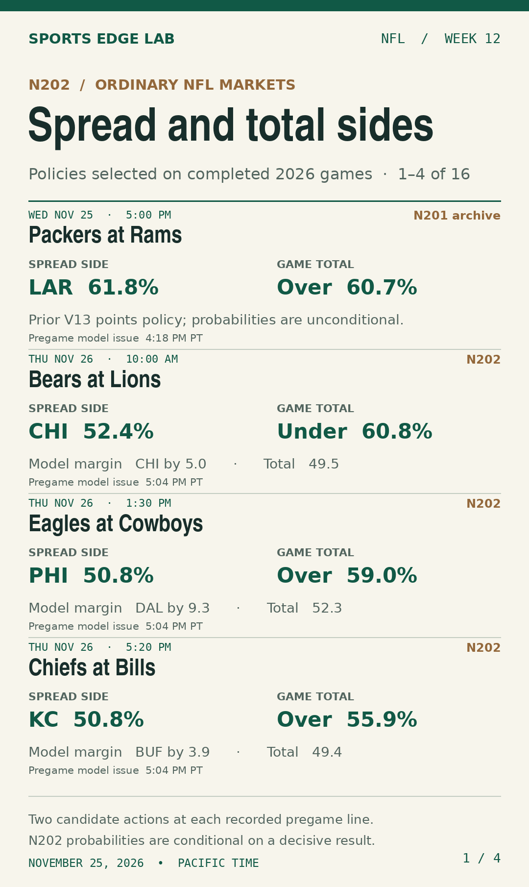
N202 ordinary 1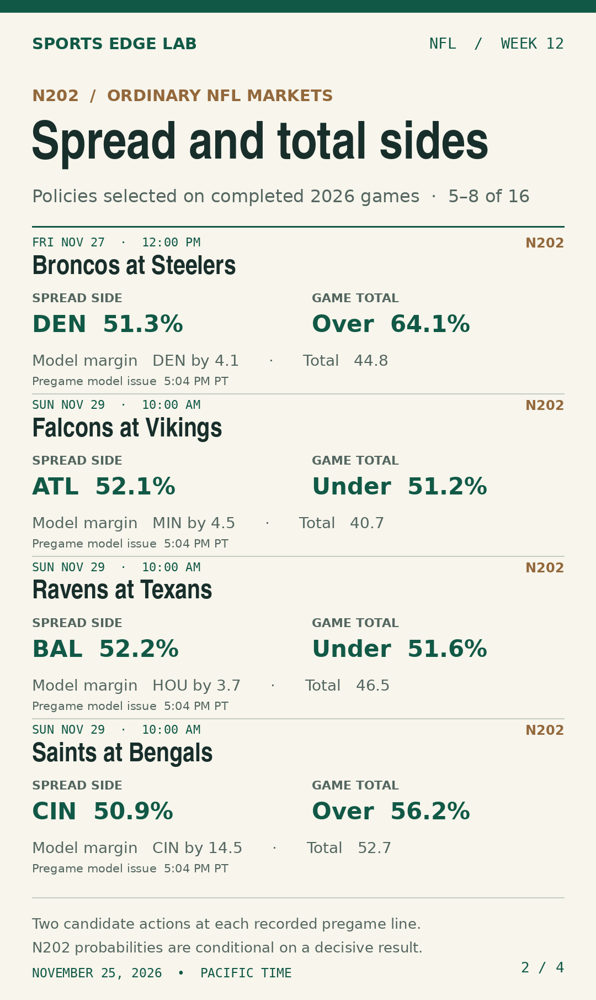
N202 ordinary 2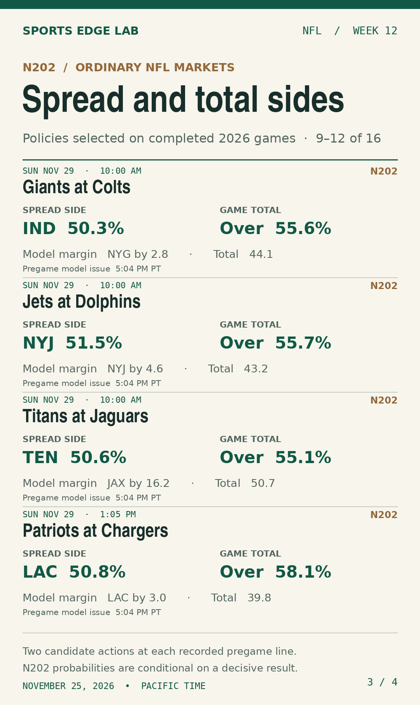
N202 ordinary 3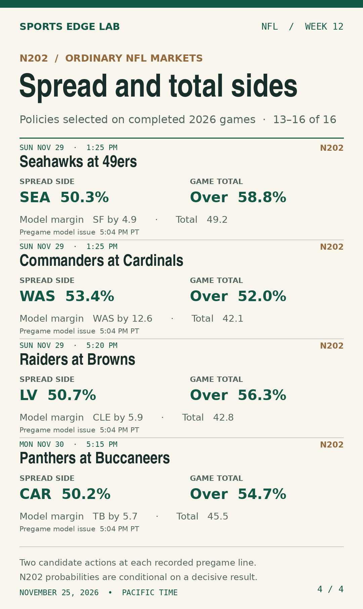
N202 ordinary 4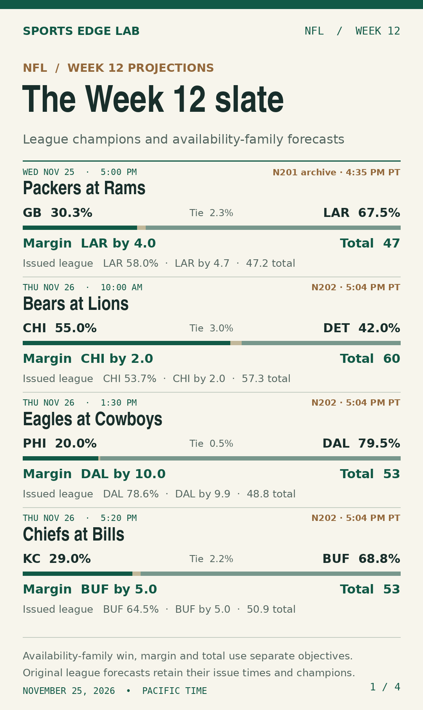
N202 forecast 1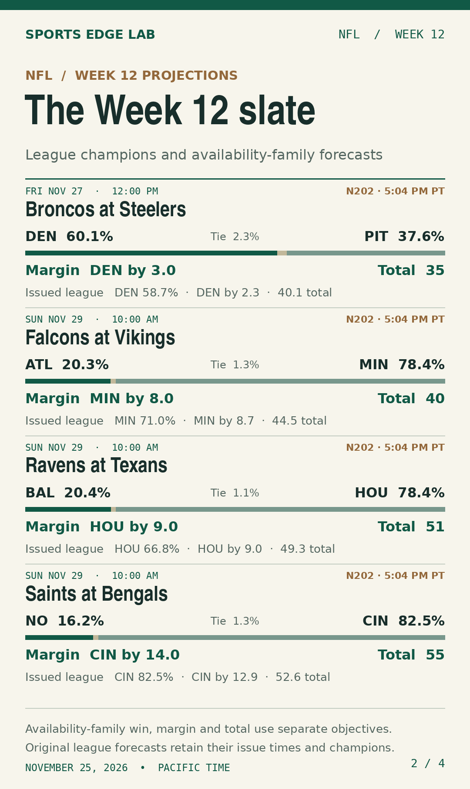
N202 forecast 2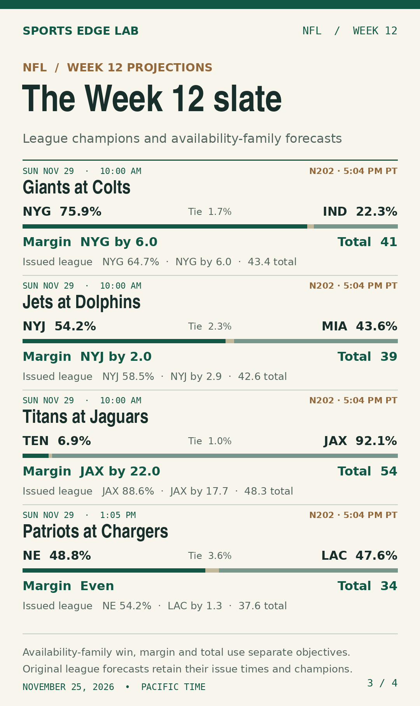
N202 forecast 3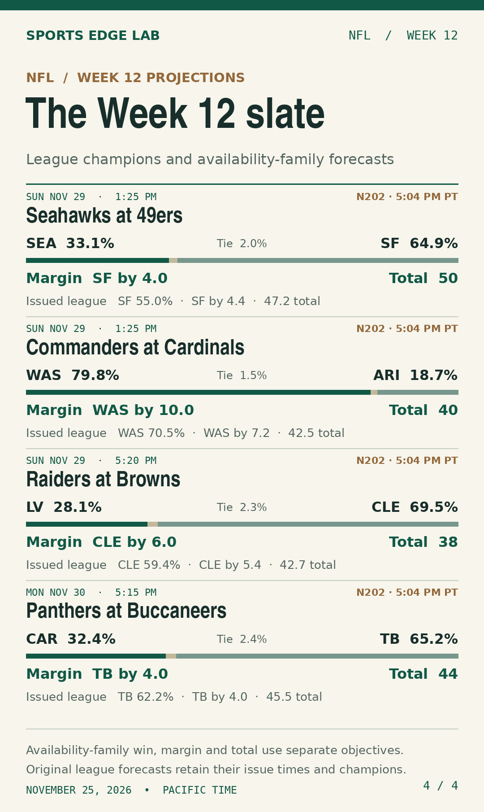
N202 forecast 4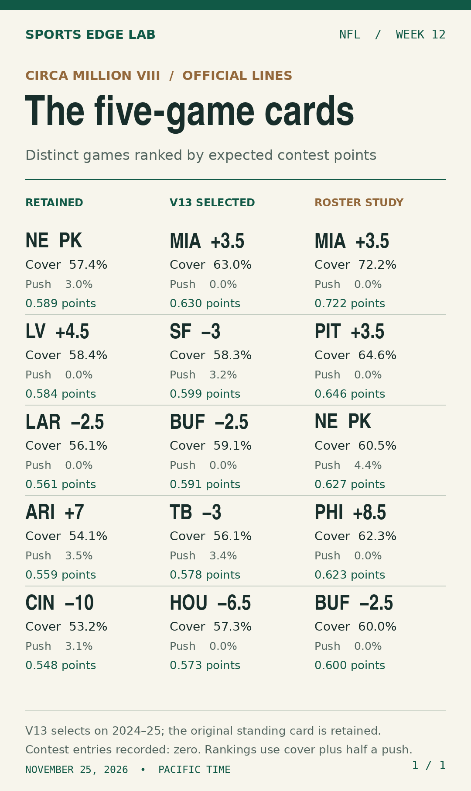
N202 Circa five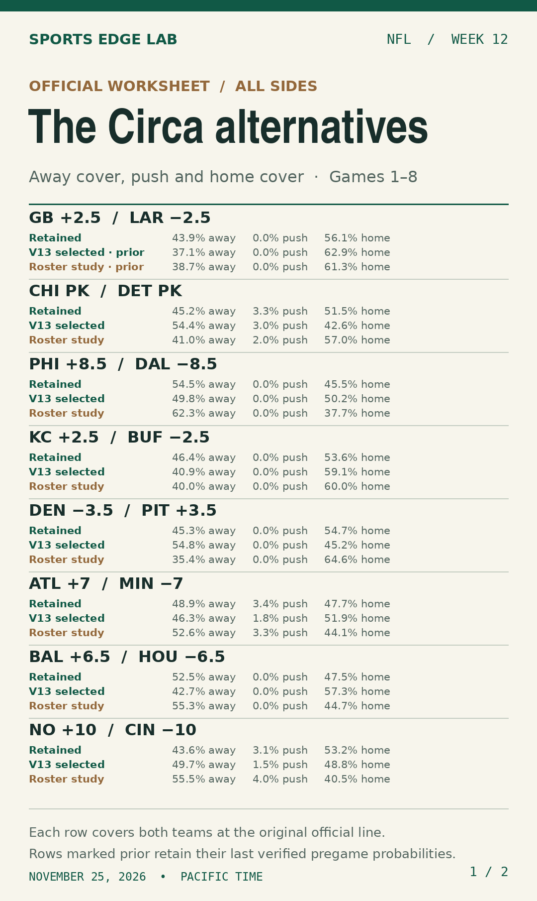
N202 Circa options 1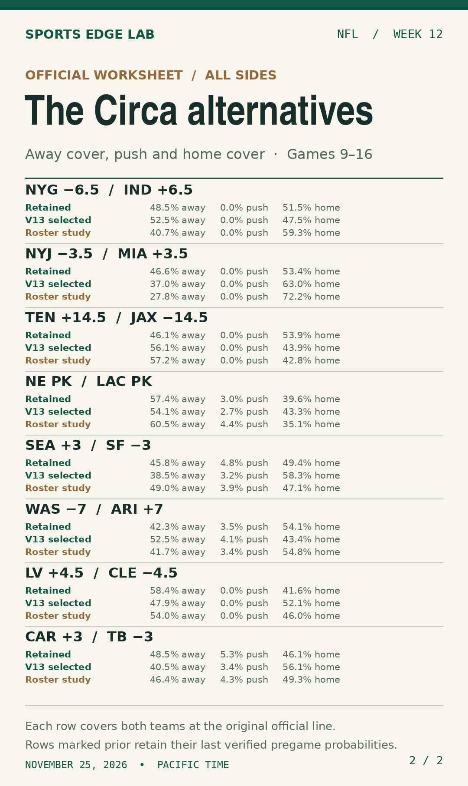
N202 Circa options 2